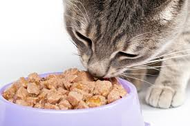
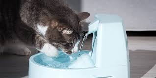
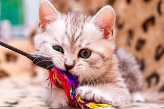

Una buena alimentación es la base de la salud felina. Es importante proporcionarles alimento de alta calidad, ya sea seco o húmedo, que contenga los niveles adecuados de proteína animal, taurina y vitaminas necesarias para su desarrollo.
La hidratación es vital, pero muchos gatos no beben suficiente agua. Es recomendable usar fuentes de agua en movimiento, ya que les atrae más que el agua estancada en un tazón, ayudando así a prevenir problemas renales.
El enriquecimiento ambiental es fundamental para su salud mental. Rascadores, juguetes interactivos y repisas altas les permiten expresar sus comportamientos naturales de caza, arañado y escalada en un entorno seguro.


